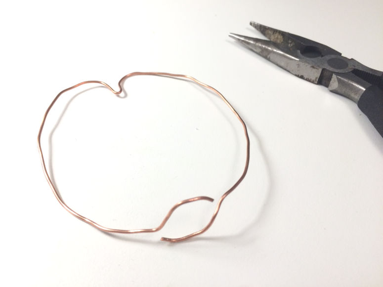
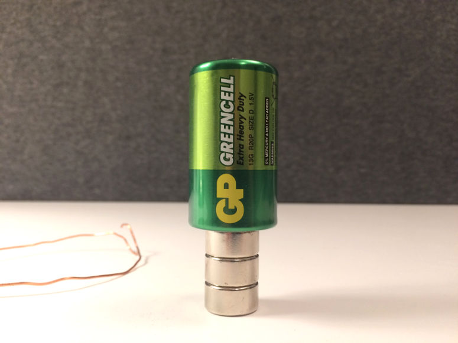
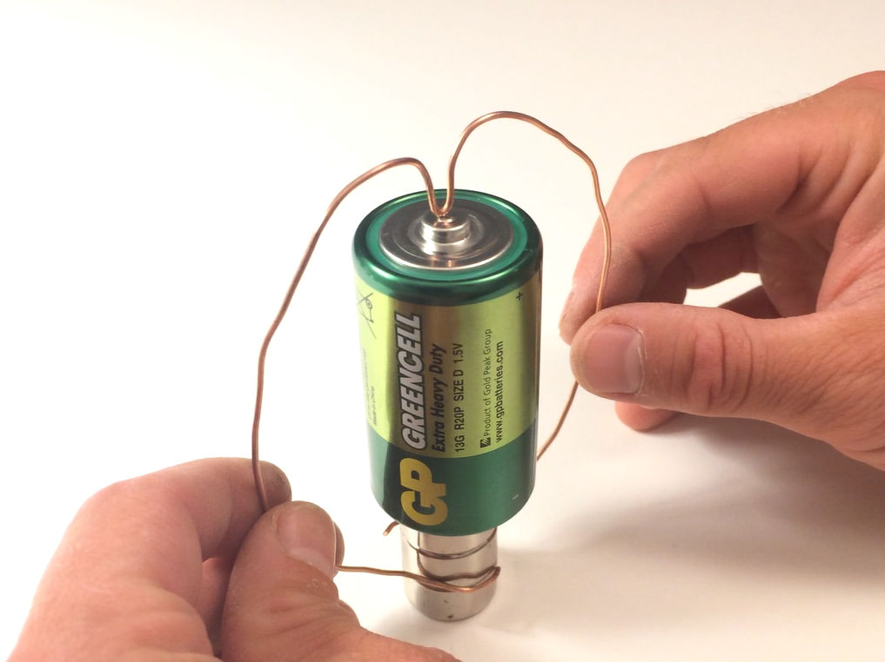
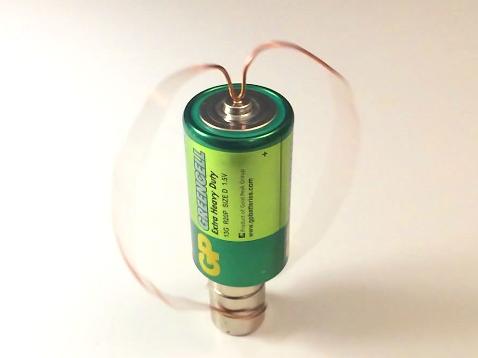
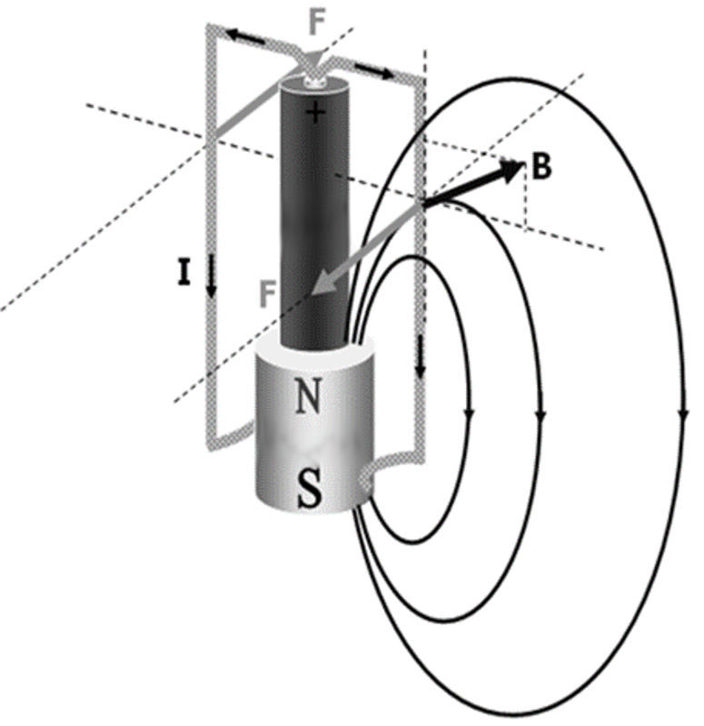

Fun and easy science experiments for kids and adults.
Electric motor

Physics
Build a simple homopolar motor from a battery, copper wire and neodymium magnets. This experiment demonstrates how the relationship between electricity and magnetism can give rise to forces and motion.
| Gilla: | Dela: | |
Video

Materials
- 2-4 neodymium magnets
- 1 approximately 35 cm (14 in) long, rigid, copper wire
- 1 pair of pliers
- A 1.5 V battery
Warning!
Remove the copper wire when not in use, otherwise it may become hot and cause a fire.Step 1


Step 2

Step 3

Step 4

Short explanation
There is a close connection between electrical and magnetic phenomena. Here, an electric current in the copper wire is conducted through the magnetic field around the magnets. This causes a force to arise, which pushes on the copper wire and causes it to move.Long explanation
You have just built a machine that can make something move with the help of an electric current - an electric motor. The electric motor works thanks to a certain interaction that exists between an electric current and a magnetic field.The multiple magnets act as a single one. There is a magnetic field around this magnet. This field is like a sphere around the magnet, but is also said to have a direction (this direction is the direction in which the north end of a compass needle points). This direction is; out from the north pole of the magnet (top end in this case), around in a large arc outside the magnet, and into the south pole of the magnet (bottom).

If an electric current is placed in this magnetic field, things can happen. In this demonstration, an electric current passes from the positive terminal (top) of the battery to its negative terminal (bottom). The electric current passes mainly through the copper wire, but in the end also through the magnet. The fact that the magnet is also part of the electric circuit is not necessary - it's enough that the magnet is only nearby - but here it is practical.Where the electric current moves in the same direction, or in the exact opposite direction, as the direction of the magnetic field, nothing happens. But where this is not the case, a force (Lorentz force) arises on the material that conducts the electric current. This force is greatest where the current moves perpendicular to the magnetic field. In this electric motor, that takes place approximately in the middle of the copper wire (see picture).
The force (F in the picture) acting on the copper wire is directed both perpendicular to the direction of the current and the direction of the magnetic field at this location. The result is that the copper wire begins to rotate.
This type of electric motor is called a homopolar motor, because the direction of the current is always the same. This type of electric motor was the very first to be designed, by the Englishman Michael Faraday in 1821.
Experiment
You can turn this demonstration into an experiment. This will make it a better science project. To do that, try answering one of the following questions. The answer to the question will be your hypothesis. Then test the hypothesis by doing the experiment.- What other shapes of the copper wire are possible?
- What other kinds of batteries are possible?
- What happens if you use more neodymium magnets?
| Gilla: | Dela: | |
Similar


Latest


Content of website
© The Experiment Archive. Fun and easy science experiments for kids and adults. In biology, chemistry, physics, earth science, astronomy, technology, fire, air and water. To do in preschool, school, after school and at home. Also science fair projects and a teacher's guide.
To the top
© The Experiment Archive. Fun and easy science experiments for kids and adults. In biology, chemistry, physics, earth science, astronomy, technology, fire, air and water. To do in preschool, school, after school and at home. Also science fair projects and a teacher's guide.
To the top